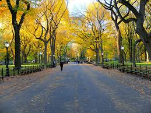

Centarl Park
Central Park es el parque urbano más grande de Nueva York y uno de los más grandes el mundo. Mide más de 4 kilómetros de largo y 800 metros de ancho.
En las 340 hectáreas que ocupa Central Park encontraréis praderas, lagos artificiales, cascadas y zonas que parecen un auténtico bosque. Dentro del propio parque también se encuentra el Zoo de Central Park y otras atracciones.
Además de ser el principal pulmón de Manhattan, este parque es uno de los lugares preferidos por los neoyorquinos para pasear, tomar el sol o hacer deporte. Como curiosidad, es sorprendente ver a mucha gente corriendo empujando los carritos de bebé.